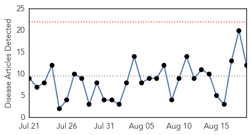
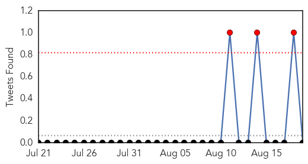
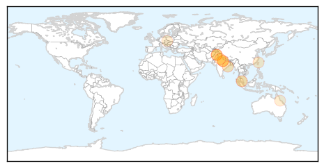
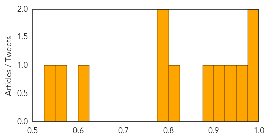

Toggle navigation
Early Warning
Daily Alerts
Dengue Fever
Aug 19, 2015
30 Day Trends
Web: 0
alerts
, 0
warnings
Twitter: 0
alerts
, 0
warnings
Top Articles:
0.996
Record dengue outbreak fans fears in Malaysia
0.980
One dead, as 15 more test positive for dengue in Kanpur
0.961
UP: One more succumbs to viral fever, death toll reaches three
0.945
Nine more test positive for dengue
0.915
Dengue cases continue to rise
0.895
No Over-the-Counter Aspirin in Delhi
0.824
VIMSAR Gets Spl Ward for Dengue Patients
0.790
15 of Ghatampur village test positive for dengue
0.783
Dengue fever: Two more patients admitted in Pindi
0.621
Tainan mayor is to blame for outbreak: KMT caucus
0.557
AIIMS challaned for mosquito breeding
0.541
Exotic Asian tiger mosquito found in Queensland can bite a dozen times in one minute
Top Tweets:
0.633
Flavivirus news: Now, new paper-based test may help detect Ebola, dengue faster - The Hindu: Th... http://t.co/zR1kEHLVtq pathogenposse
Web/News Articles

Tweets

Article Locations

Article Confidences
